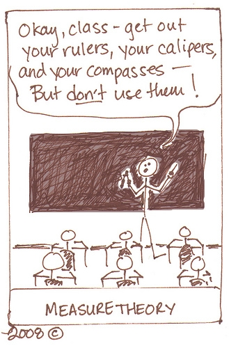

The reason we need probability theory is that it’s a formal language of uncertainty. Even though you can go a long way as a practitioner with standard tools in probability theory, deeply understanding its measure-theoretic foundations could open up a whole new world to the researcher. It’s easy to take the results from statistics and probability for granted, but it’s useful to be aware what hides beneath the surface.
In order to build adequate models of economic and other complex phenomena, we have to take into account their inherent stochastic nature. Data is just the appearance, an external manifestation of some latent processes (seen as random mechanisms). Even though we won’t know the exact outcome for sure, we can model general regularities and relationships as a result of the large scale of phenomena. For more ideas see (Ruxanda 2011)
As an economist and modeler, the goal of this project is to step-by-step explain the Caratheodori Extension Theorem in order to understand the language, gain some intuition and insight about it. The value of studying it comes not from the theorem itself, but from the process of discovery and understanding a proof forces you to go through. (Landim 2016) If you’re a mathematician and for some reason reading this, you might ask:
“Are you insane going into it without any knowledge of real analysis”?
The answer is that I want to learn the language, and not to achieve excellence in Measure Theory. Also, I can hardly take things for granted and need a justification of why things (in probability) are done exactly this way. (Rhosental 2006) We’ll develop a plan of attack and a network of ideas and concepts that need to be understood in order to tackle the problem, hoping that resourcefulness and intuitions will compensate for the lack of rigor.
Motivation for measure theory in a practice-oriented world
The field of Data Mining moved a long way, becoming accessible and bringing value for individuals and industries. A lot of Machine Learning and Statistical models are available with a few lines of code. If it should be obvious why we need probability theory, it’s not so with measure theory.
See the Andrew Gelan (a giant of Bayesian statistics) and Cosma Shalizi (an expert in Data Mining) disagreement on the subject
I’ll give an analogy: even though the models can be easily applied in a high-level language like R or Python, understanding the Learning Theory can bring you on another level, closer to excellence. In the case of measure theory, some argue that there are alternative things to study which can bring more value, and they’re not wrong, but for an ambitious field like Bayesian Nonparametrics, it’s hard to make even little progress because of the understanding barrier. This is why I like to think of it as a language (Lawrence 2012) extremely useful in the fields of stochastic processes and learning theory. So, the truth is somewhere in between and key to learning these subjects is a personally optimal balance of theoretical understanding, practice on real data problems and simulation exercises.
Studying measure theory might look like a gruesome process to do on your own, but it makes sense posing a reverse question: what do I need to know to understand all these awesome papers where there is a urge to ask: “The probability over what?”
A personal experience was in an attempt to study nonlinear state-space models, where there are some exciting papers on Bayesian Nonparametrics and Stochastic Filtering. Reading and working through papers felt like missing a good part of the story, because of some lacking fundamentals. It’s extremely important to recognize what you don’t know. That’s right, I want to be able to formulate meaningful statements about distributions of more abstract objects, like functions, graphs, etc and to reason about stochastic processes.
For example, having a great understanding of probability helps to define in a clear and rigorous way difficult concepts used in statistics and econometrics (which might look deceptively simple at first) as p-values, confidence intervals, power, hypothesis testing and helps avoiding a lot of confusion. Let’s take the idea of power of the test in its simplest form (for a one-sided Z test), which a lot of practitioners struggle to define when asked.
The mathematical formulation uncovers some of the assumptions we’re making and suggests the interpretation. Notice how \[\frac{\mu_a - \mu_0}{\sigma}\] is a proxy for a “unit free” effect size.
- \(\beta\) Type II error: Failure to reject \(H_0\) when it’s false
- \(\alpha\) Type I error: Falsely rejecting a true \(H_0\)
- \(1 - \beta\) is the power
- \(\mu_0\) the null hypothesis
- \(\mu_a\) the alternative hypothesis
The response of the power being the probability of rejecting a null hypothesis when it’s false might not suggests that there is much going on.
\[\begin{align*} 1- \beta &= \mathbb{P} \bigg( \frac{\bar{X} - \mu_0}{\sigma / \sqrt{n}} > \mathbf{Z}_{1-\alpha} \bigg\lvert \mu = \mu_a \bigg) \\ ~ &= \mathbb{P} \bigg( \frac{\bar{X} - \mu_a + \mu_a - \mu_0}{\sigma / \sqrt{n}} > \mathbf{Z}_{1-\alpha} \bigg\lvert \mu = \mu_a \bigg) \\ ~ &= \mathbb{P} \bigg( \frac{\bar{X} - \mu_a}{\sigma / \sqrt{n}} > \mathbf{Z}_{1-\alpha} - \frac{\mu_a - \mu_0}{\sigma / \sqrt{n}} \bigg\lvert \mu = \mu_a \bigg) \\ ~ &= \mathbb{P} \bigg( \mathbf{Z} > \mathbf{Z}_{1-\alpha} - \frac{\mu_a - \mu_0}{\sigma / \sqrt{n}} \bigg\lvert \mu = \mu_a \bigg) \end{align*}\]
But there is a lot going on, the power depending on the effect size, assumed level for the type I error and the sample size. The distribution of the term \[\mathbf{Z} = \frac{\bar{X} - \mu_a}{\sigma / \sqrt{n}}\] is actually the one under the alternative hypothesis. Note that power calculations done post-hoc are usually a terrible idea.
Also, it’s almost impossible to sense the dangers of interpretations of p-values, types of errors and confidence intervals without trying to understand the mathematics behind statistical testing. Tests are also models, little “Golemns of the Prague” and they might fail in unexpected ways when the assumptions do not hold. (McElreath 2015)
As it’s often the case in mathematics, things have a deep justification behind them and even though you can successfully apply the models in practice, understanding is what separates a great modeler. Often, a breakthrough comes in the form of something that nobody have thought before.
I think we’ll appreciate the input from mathematicians more in an applied field like Data Mining, as it will help figure out why deep neural networks work so well. Same is true for Extreme Gradient Boosting and other things that just seem to work. It took me some time trying to solve real world problems, in order to appreciate the usefulness of deeply understanding different ideas in mathematics.
This is why, in the path to mastery of machine learning, certain topics appear which might change your perspective forever. One of these is Measure Theory. Is it useful in practice? Probability Theory taught in undergraduate courses might be what most people need, but it’s limited in a certain sense, imposing an artificial dichotomy between discrete and continuous random variables and thinking in terms of probability density functions and cumulative distribution functions.
Regarding (Caratheodori), it’s not the formulation of the theorem which brings the most insight, but ideas in the proof as measurable sets and outer measures.
Measure Theory in Machine Learning
Some courses will mention it, but as a side for the mathematically inclined students and not appearing anywhere later
In undergraduate probability we can get away with the lack of measure-theoretic notions, as we’re working on real spaces, continuous functions and the instruments we have in these tame cases seem enough. There are also wilder cases, in which we need new tools and language to be rigorous, as otherwise we would just hope for the best (that the probability measure is defined). In some of the fields mentioned above researchers have to deal with weird stuff like distributions which have continuous and discrete elements, when a mixture of a density with point masses isn’t very helpful to work with.
 Source: brownsharpie
Evans Lawrence gives the following example of a function which is neither discrete nor continuous, for which you flip a coin and if it comes heads, draw from an uniform distribution and in case of tails a unit mass at one. If \(\chi_{[0,1]}(x) = (e^{ix} - 1)/ix\) is the characteristic function of the interval from zero to one, in a way you can formulate its density, but usually it’s not the case, nor is it very helpful to think about it in such terms.
\[\begin{equation} p(x) = w_1 \chi_{[0,1]}(x) + w_2\delta_1(x) \end{equation}\]
Even though you can visualize this in two dimensions as the uniform and a spike, or as a CDF with a discontinuity, this approach just breaks down in higher dimensions or more complicated combinations of functions.
Jeffrey Rosenthal begins his book (Rhosental 2006) by a similar motivation, constructing the following random variable as a coin toss between a discrete \(X \sim Pois(\lambda)\) and continuous \(Y \sim \mathcal{N}(0,1)\) r.v.
\[\begin{equation} Z = \begin{cases} X, p = 0.5 \\ Y, p = 0.5 \end{cases} \end{equation}\]
He then challenges the readers to come up with the expected value \(\mathbb{E}[Z^2]\) and asks on what is it defined? It is indeed a hard question.
It is not surprising for me that measure theory becomes important in the Learning Theory, even though lighter courses from which I studied don’t mention it explicitly (Yaser Abu-Mostafa, Shai Ben-David, Reza Shadmehr). According to Mikio’s Brown answer it’s essential in the idea of uniform convergence and its bounds, where “you consider the probability of a supremum over an infinite set of functions, but out of the box measure theory only allows for constructions with countably infinite index sets”.
If we’re thinking about a regression from the nonparametric perspective \(f(x) \in \mathscr{C}^2:X \rightarrow \mathbb{R}\), we might want to know how a draw from a (infinite) set of continuous differentiable functions might look like. The questions arises: how to define a PDF in this space? In my thesis (Mihai 2017) I got away with using Gaussian Processes, which are a very special class of stochastic processes. In this special case I could informally define an apriori distribution by defining the mean vector and Kernel (covariance function), then condition it on observed data with a Normal Likelihood.
An example of reasoning about distributions of random functions from my Thesis. The prior distribution
Only the functions that explain the data well survive
\[\begin{equation} p(f(x) \, |\left \{ x\right \})=\frac{p(\left \{ x\right \}| \, f) \, \mathbf{p(f)}}{p(\left \{ x\right \})} \end{equation}\]
\[\begin{equation*} f(x) \sim GP(\mu(x); K(x,x')) \end{equation*}\]
The result was that only the functions that explained the data well survived. While this reasoning makes intuitive sense, there are things “swiped under the carpet”. If we were to model stock prices, where there are jumps and the process itself is less smooth, measure theory would be very hard to avoid. If we would want to reason in terms of densities, ask with respect to what? So, the focus is shifted towards the question of what is the probability of every possible event. This leads us back to the fundamental object of state (outcome) space \(\mathbf{\Omega}\).
Each element \(\omega_i \in \mathbf{\Omega}\) is an elementary event (outcome), while \(A \subset \mathbf{\Omega}\) is an event
As we will shortly see, it’s impossible to define the probability (measure) on the set of all subsets \(2^\Omega\), except for the simple finite cases, without having to let go of a fundamental axiom like countable additivity. This will be the first step in getting closer to defining a Uniform distribution on \([0, 1]\).
Surprisingly, to rigorously define an Uniform distribution is not a trivial task, because of the mentioned above impossibility, proved later by contradiction. In contrast, Caratheodori theorem allows us to do exactly that
Tarun Chitra in the same thread argues that many classification problems are ill-posed mathematically, and the ones which can be formulated in a measure-theoretic way have very nice results, like SVMs with Reproducing Kernel Hilbert Spaces, where you cannot apply the Mercer’s Theorem unless the Kernel is measurable. The second example he gives is proving some results about Stochastic Gradient Descent, an optimization algorithm often successfully used, which has connection with Brownian Motion, thus Weiner measures.
Measure theory is also important in rigorously defining distances and divergences (for example between two distributions as in Kullback-Leiber)
Measure Theory and the fundamentals of Probability Theory
It is useful to step back and see where does Measure Theory fit in the framework of Probability Theory. The following list will be a summary of a lecture at doctoral school by (Ruxanda 2017) Here are 8 steps to mastery of the basics by Gheorghe Ruxanda:
- A random experiment (\(\mathscr{E}\)) is a set of conditions which are favorable for an event in a given form with the following properties:
- Possible results are known apriori
- It’s never known which of the results of \(\mathscr{E}\) will exactly appear
- Despite (b), there is a perceptible regularity, (encoding the idea of a probabilistic “law”) in the results. Also, it could be as a result of the large scale of the phenomena.
- Repeatability of the conditions, i.e. the comparability and perservation of context are key.
- Elementary event as an auxiliaty construction: one of the possible results of \(\mathscr{E}\), \(\omega_i \in \Omega\)
- Universal set \(\Omega = \{ \omega_1, \omega_2, \dots \}\) Also called (Outcome/ State/ Selection space), it suggests the idea of complementarity and stochasticity: we don’t know which \(\omega_i\), is a key object for a further formalization of probability measures.
- We care not only about an event \(A = \bigcup\limits_{i = 1}^n \omega_i\) and its realization, but also about other events in the Universal Set, because they might add information about the probability of occurring of our event of interest
- The event space \(\mathcal{F}\) should be defined on sets of subsets of \(\Omega\) and this is where measure theory shines. We’ll discuss later in extensive detail the following conditions on the way to defining sigma-algebras. As can be seen later, we usually can’t define a probability measure on all sets of subsets.
- Probability as an extension of the measure: chance of events realizing. Note that the perceptible regularity can be thought as the ability to assign a probability to elementary events: \(\mathbb{P}(\omega_i)\). This is where additivity properties are key. A long discussion on Frequentist vs Bayesian interpretation of it can follow from here.
- A probability triple \((\Omega, \mathcal{F}, \mathbb{P})\)
- The idea of Random Variable
Before moving on to probability measures, it’s useful to think about what a random variable really is and does, because formally, it’s neither a variable, nor random. That should be another motivation for speaking the language of measure theory.
The idea of the random variable as being a quantificator of elementary events (function defined on the outcome space which maps the elementary events to the real line in 1d) that perserves the informational structure of the sample space is very powerful, is formally defined and related to the idea of measurability.
Start from some phenomena of interest and a random experiment. The random variable is a necessary abstraction in order to mathematically define quantificable characteristics of the objects.
\[\begin{align} X(\omega):\Omega \rightarrow \mathbb{R} \\ s.t. ~~ \{\omega \in \Omega | X(\omega) \leq r, \forall r \in \mathbb{R} \} \in \mathcal{F} \end{align}\]
The idea of conservation of the informational structure is actually equivalent to the one of measurablility. If this property doesn’t hold, it’s not possible to explicitly and uniquely refer to the sets (events) of interest. The idea is that the preimage defined above \(X^{-1}((-\infty,r]) = E \in \mathcal{F}\) on the following interval corresponds to an event E which should be in the event space \(\mathcal{F}\). Because the only thing that varies is the limit of the interval r, the randomness comes from it. Also, it automatically suggests the idea of the Cumulative Distribution Function, which is \(F_X(X \le r)\).
Can’t have it all: The trouble with the Uniform
Following the previous discussions we would want to define a probability measure \(\mathbb{P} :2^\Omega \rightarrow [0, 1]\) on the set of all subsets of \(\Omega = [0, 1]\) for the uniform distribution. Unfortunately we can’t have that and perserve essential properties of probability measures.
All other properties can be easily derived from these, thus these are minimal requirements for a probability measure. Nonetheless, these conditions are too restrictive if we want to define an Uniform Distribution on \(2^\Omega\).
- \(\mathbb{P}(\Omega) = 1\) and \(\mathbb{P}(\varnothing) = 0\)
- \(\mathbb{P}(A) \in [0, 1]\)
- If \(A \cap B = \varnothing \implies \mathbb{P}( A \cap B) = \mathbb{P}(A) + \mathbb{P}(B)\)
- If \(\{ A_i \}_{i=1}^\infty\) s.t. \(A_i \bigcap\limits_{i \ne j} A_j = \varnothing \implies \mathbb{P} ( \bigcup\limits_{i = 1}^\infty A_i) = \sum\limits_{i = 1}^{\infty}\mathbb{P}(A_i)\)
The idea of uniform distribution is closely related to the one of length, area, volume, depending on what space are we into. That means the probability measure will look like this:
\[\begin{equation} \mathbb{P}([a, b]) = b - a \end{equation}\]
where \(\mathbb{P} :2^\Omega \rightarrow [0, 1]\) and \(0 \le a \le b \le 1\)
The proof is done by contradiction, but the implications are a little bit deeper, related to paradoxes like Banakh-Tarsky and Vitali Sets, which are counter-intuitive but closely related to the idea of something being unmeasurable. Because we can’t get rid of any of the axioms, we should deal with the fact that we can’t define the measure on \(2^\Omega\).
Instead define a set of subsets \(\mathcal{A} \subset 2^\Omega\) such that \(\mathbb{P}: \mathcal{A} \rightarrow [0,1]\). These sets will have to obey certain properties and this is where all the terminology from measure theory comes in with algebras, semi-algebras and sigma-algebras. Each of these concepts and objects will be stepping stones towards understanding Caratheodori
Background concepts towards Caratheodori
Let’s continue on this upbeat note and try to figure out what kind of sets \(\mathcal{A}\) are measurable, for which we can define their probabilities.
Def: Algebra and Semi Algebra: A set of subsets \(\mathcal{A} \subset 2^\Omega\) is an algebra (field) if the following holds:
- \(\Omega \in \mathcal{A}\) and \(\varnothing \in \mathcal{A}\)
- If \(A \in \mathcal{A}\) then \(A^C \in \mathcal{A}\) (closed under complements)
- If \(A, B \in \mathcal{A}\) then $ A B $ (closed under union). Note that 2 and 3 imply that it’s closed under countable intersection
- For sigma-algebra: sigma refers to countability} If \(\{ A_i \}_{i \ge 1} \in \mathcal{A}\) then \(\bigcup\limits_{i \ge 1} A_i \in \mathcal{A}\) (closed under countable union)
On an intuitive note, we define the probability measure on sigma-algebras because if certain conditions did not hold, the measure wouldn’t make sense.
Def: Probability Measure: Suppose we have defined a measurable space \((\Omega, \mathcal{A})\), where \(\mathcal{A}\) is a sigma-algebra. A probability measure is the function \(\mathbb{P}:\mathcal{A} \rightarrow [0, 1]\) such that:
- \(\mathbb{P}(\Omega) = 1\)
- \(\forall \{ A_i \}_{i \ge 1}\) where \(A_i \bigcap\limits_{i \ne j} A_j = \varnothing\) (countable sequences of mutually disjoint effects), \(\mathbb{P}(\bigcup\limits_{i \ge 1} A_i) = \sum\limits_{i \ge 1} \mathbb{P}(A_i)\)
As stated earlier, for more difficult cases, when it’s hard or impossible to reason in terms of probability density functions, it is more convenient to talk about measures. For the previous cases of point masses \(\delta_k(x)\) and continuous functions we can ask the question what is the probability of a certain outcome directly if using measure-theoretic formalism. \(\Omega = \mathbb{R}\) and \(\mathcal{A} = 2^\Omega\) and the point mass looks basically like a spike at \(k^{th}\) place in the real line.
\[\begin{equation} \mathbb{P}(A) = \begin{cases} 1, ~~ k \in A\\ 0, ~~ k \notin A \end{cases} \end{equation}\]
In order to define the probability measure for the continuous measure, much deeper results should be invoked. > The Borel Spaces in itself encode a chain of new concepts that need to be understood from Banakh Spaces, Normed Spaces and how to close them under complement and union.
- \(\Omega = \mathscr{C}([0,1];\mathbb{R})\)
- \(\mathcal{A} = \mathcal{B}(\mathscr{C}([0,1];\mathbb{R}))\)
This might be one of the reasons why Stochastic Processes is such a difficult and powerful field, because of the amount of knowledge encoded even in the “simplest” Brownian Motion (where \(\mathbb{P}\) is a Weiner measure).
Going back to our pursuit of Caratheodori theorem, it is useful to understand why do we need countable additivity. If the finite additivity is clear, for example in the case of disjoint segments of the uniform distribution \(X \sim Unif([0,1])\), \([a_1, b_1]\) and \([a_2, b_2]\), it’s essential that the following holds.
\[ \mathbb{P}([a_1, b_1] \cup [a_2, b_2] ) = \mathbb{P}(a_1 \le X \le b_1) + \mathbb{P}(a_2 \le X \le b_2) \]
Countable additivity \(\mathbb{P}(\bigcup\limits_{i \ge 1} A_i) = \sum\limits_{i \ge 1} \mathbb{P}(A_i)\) is useful to prove that limits exists, which is very important in various statistical procedures. We can’t say anything about uncountable additivity because the measure of each element on the r.h.s. will be zero, while the measure of the interval is one, which is a contradiction
To get our feet wet, let’s see what techniques are employed by various authors in order to prove the impossibility of constructing a measure which has the idea of length while keeping the axioms.
Proposition: There does not exist a (probability) measure \(\lambda(A)\) (Note that we’ll switch conventions to the measure-theoretic one employed by the Claudio Landim’s course as it’s one of the very few available online and it should be easier to follow in parallel with this reading) defined for all subsets of \(A \subseteq [0, 1]\) satisfying.
- \(\lambda: \mathscr{P}([0,1]) \rightarrow [0,1]\) which could be all rational numbers, for example
- \(\lambda([a, b]) = b - a\) as an extension of the idea of length
- \(\forall A \subseteq [0,1]\) and \(\forall x \in [0,1]\) translation invariance \(\lambda(A + x) = \lambda(A)\). Alternatively stated, \(A + x = \{x + y ~|~ y \in A \}\).
- If \(A = \bigcup\limits_{j \ge 1} A_j\) is an union of mutually disjoint sets \(A_i \cap A_j = \varnothing\) then \(\lambda(A) = \sum\limits_{j \ge 1} \lambda(A_j)\) This is exactly the notion of sigma-additivity encontered over and over again.
We can use \([0, 1]\) as in Rosenthal without loss of generality. Landim uses \(\mathbb{R}_+\cup\{ +\infty \}\). Note that \(\mathscr{P}(\cdot)\) is the power set}
Proof: Assume that \(\exists\) a measure \(\lambda\) such that above conditions hold. First, we need to introduce the notion of equivalence relation (in order to say “x is related to y”: \(x \sim y\)), which is key to proving this. The point is that the equivalence relation will partition a set, which allows us by invoking the Axiom of Choice to get towards the desired contradiction.
Relation set: S is a boolean function with \(x, y \in S\) \[R:S \times S \rightarrow \{0, 1\}\] Thus \(x \sim y\) means x is related to y.
Given an equivalence relation ~ and \(x \in S\) the equivalence class of x is \(\{ y \in S \lvert y \sim x \}\). If x is an equivalence class then any pair of equivalence classes is either identical or disjoint. So, the relation forms equivalence classes, which form a partition on S.
Def: A relation is an equivalence relation if
- reflexive: \(x \sim x\) \(~~ \forall x \in S\)
- symmetric: \(x \sim y \implies y \sim x\) \(~~ \forall x, y \in S\)
- tranzitive: \(x \sim y\) and \(y \sim z \implies x \sim z\) \(~~ \forall x, y, z \in S\)
Both Rosenthal and Landim use a special equivalence class involving a relation \(x \sim y\), \(x, y \in \mathbb{R}\) for rational numbers: \(y - x \in \mathbb{Q}\). The equivalence class for x becomes
\[\begin{align} [x] = \{ y \in \mathbb{R} | y - x \in \mathbb{Q} \} \\ \Lambda = \{ \alpha, \beta \dots \} = \mathbb{R} \lvert \sim \end{align}\]
\(\Lambda\) is another important object (the set of equivalence classes) which is R modulo the equivalence relation, clearly uncountable, because \([x]\) are countable. Now, using the Axiom of Choice a new set \(\Omega\) is constructed in the following way: for each equivalence class \(\alpha, \beta\) one and only one element is selected.
There are deep philosophical discussions regarding it, but it’s outside the scope of current project. Basically what we need to know is that it allows us to “simultaneously” choose from \(\Lambda_j\)
\([x]\) can be chosen in such a way that \(\Omega \in [0, 1]\)
We reached a little milestone, as now there is a handle and structure to the problem, in contrast it wasn’t clear where to start from in the beginning. Here, Rosenthal is very brief, finishes the proof quickly and it seems that Landim chooses a much longer, but much more explicit way. A link to the alternative proof. I’ll choose the first one, because there are not many concepts used later for us to benefit by going through it.
\[\begin{equation} \Omega = \{ \omega_1 \in \alpha , \omega_2 \in \beta, \dots \} \in [0, 1] \end{equation}\]
A key claim is that if we translate \(\Omega\) by \(p, q \in \mathbb{Q}\), the following dichotomy is true: either the sets are equal or disjoint (which was mentioned at the beginning of the proof).
\[\begin{equation} \begin{cases} \Omega + q = \Omega + p \\ (\Omega + q) \cap (\Omega + p) = \varnothing \end{cases} \end{equation}\]
Since \(\Omega\) contains an element from each equivalence class, each point in \((0, 1] \subseteq \bigcup\limits_{r \in \mathbb{Q}} (\Omega + r)\) (is contained in the union of rational shifts of \(\Omega\)).
Since \(\Omega\) has only one element \(\forall [x] \implies \Omega + r, \forall r \in [0, 1]\) are disjoint. Thus for \(r \in [0, 1]\),
\[\begin{align} \lambda([0, 1]) &= \sum\limits_{r \in \mathbb{Q}} \lambda(\Omega + r) \\ &= \sum\limits_{r \in \mathbb{Q}} \lambda(\Omega) \end{align}\]
Notice the rhs is countably infinite sum, so it can be either zero or \(+\infty\) or \(-\infty\), but lhs is one. So, we arrive at the contradiction. For the last steps, some more understanding is needed. This is why the second proof is great and even though longer, very explicit.
So, what’s the trouble with the Uniform? Nothing particular, it’s just that not all subsets are measurable (have an associated measure). This is why we need concepts like semi-algebra, algebra and sigma-algebra in order to reason about what subsets of the power set are measurable.
Plan of Attack
The idea is to extend the following measure \(\lambda([a, b]) = b - a\) (of the length) to increasingly more strict scope with respect to \(\mathscr{P}(\mathbb{R})\), while keeping the desired properties. I jumped a little bit ahead of myself defining the sigma-algebra, as there are more prerequisites and intermediary steps needed. Defining the following objects (classes of subsets) will help demistify a lot of terminology used
- semi-algebra
- algebra
- sigma-algebra
We’ll construct an increasing set of more restrictive conditions. Basically, semi-algebra is weaker than algebra which is weaker than sigma-algebra. These classes of subsets have certain properties and subtle relationships between them and without understanding these, it is very hard to move on to extend the measure.
Def: Semi-Algebra is a class of subsets \(\mathcal{S} \subseteq \mathscr{P}(\Omega)\) if the following holds
- \(\Omega \in \mathcal{S}\) and \(\varnothing \in \mathcal{S}\)
- \(A, B \in \mathcal{S} \implies A \cap B \in \mathcal{S}\) (closed by finite intersections)
- \(\forall A \in \mathcal{S}\), \(\exists \{ E_1 , \dots, E_n \} \implies A^C = \sum\limits_{j = 1}^n E_j\) Complement viewed as a finite union of elements of \(\mathcal{S}\)
Imagine a segment \([a, b]\) on \([0, 1]\) and take its complement, it is obvious that it can be represented as a finite union of sets of \(\mathcal{S}\). Actually, these simple examples inspired the definition of semi algebra, but as we can see the conditions are weaker than the ones for algebra. The algebra and sigma-algebra were defined above, but it doesn’t hurt to inspect the relationship between the two in more detail.
Def: Algebra is a class of subsets \(\mathcal{A} \subseteq \mathscr{P}(\Omega)\) if the following holds
- \(\Omega \in \mathcal{A}\) and \(\varnothing \in \mathcal{A}\)
- \(A, B \in \mathcal{A} \implies A \cap B \in \mathcal{A}\) (closed by finite intersections)
- \(A \in \mathcal{A} \implies A^C \in \mathcal{A}\) (closed under complements, a stronger condition)
Remark: If \(\mathcal{A}\) is a sigma-algebra then \(\mathcal{A}\) is also a semi-algebra. This is important because we want to make statements about algebras generated by semi-algebras which have very nice properties.
Remark: Let \(\mathcal{A}_i \subseteq \mathscr{P}(\Omega)\) be an algebra of subsets of \(\Omega\) where \(i \in I\) could be any index. Then \(\bigcap\limits_{i \in I} \mathcal{A}_i = \mathcal{A}\) is also an algebra. This is verified by the definition of algebra.
Def: Sigma-Algebra is a class of subsets \(\mathcal{F} \in \mathscr{P}(\Omega)\) if the following holds
- \(\Omega \in \mathcal{F}\) and \(\varnothing \in \mathcal{F}\)
- \(A_j \in \mathcal{F}\) \(\implies \bigcap\limits_{j \ge 1} A_j \in \mathcal{F}\) (closed by countable intersections)
- \(A \in \mathcal{F} \implies A^C \in \mathcal{F}\) (closed under complements)
Remark: Let \(\mathcal{F}_i \in \mathscr{P}(\Omega)\) be a sigma-algebra of subsets of \(\Omega\) where \(i \in I\) could be any index. Then \(\bigcap\limits_{i \in I} \mathcal{F}_i = \mathcal{F}\) is also an algebra. Same as in case of algebra
Also needs to be shown that these extensions are unique at each step. Let’s take a break in order not to get lost in detail and terminology: What are we doing here? It was proven that we cannot define a measure extending the idea of length on \(\mathscr{P}(\Omega)\) under standard axioms of probability.
\(\Omega = [0, 1], \mathbb{P}([a, b]) = b - a\), but what is \(\mathcal{F}\)? A sigma-algebra, but it’s not obvious at all why.
\[\begin{equation} Unif([0, 1]) \longrightarrow (\Omega, \mathcal{F}, \mathbb{P}) \end{equation}\]
That gave a motivation of defining measures on algebras with conditions of ever increasing strength/restriction. Relationships between these types of objects and their properties are key in making progress, which is quite clear from the diagram above. Even though these steps might look similar, the techniques and concepts employed are quite different. Nonetheless, the question always stays conceptually the same: On what can we define a (probability) measure? In essence, the whole language is developed in order to reason and make meaningful statements about sets of subsets and whether it can be “measured”.
Also notice that we haven’t still reached even the start of what most measure-theoretic probability courses begin from. This is good, because we’re spending time on understanding the fundamentals on which all that theory is built.
The next element we need is to define relationships between fields such as algebras generated by semi-algebras and so on. First, C. Landim introduces an algebra \(\mathcal{A}(\mathscr{C})\) generated by a class of sets \(\mathscr{C} \subseteq \mathscr{P}(\Omega)\) such that the following holds
- \(\mathscr{C} \subseteq \mathcal{A}\), where \(\mathcal{A}\) is the smallest algebra that contains \(\mathscr{C}\)
- If \(\mathscr{B} \supseteq \mathscr{C}\) is a sigma-algebra \(\implies \mathscr{B} \supseteq \mathcal{A}\)
Remarkably, the same is true for sigma-algebras, proven by a chain of thought involving all sets \(\mathcal{A}_\alpha\) which contain \(\mathscr{C}\). Their intersection \(\bigcap\limits_\alpha \mathcal{A}_\alpha = \mathcal{A}\) contains \(\mathscr{B}\) and since it contains $ $, it belongs to that intersection, hence, it’s the smallest sigma-algebra that contains \(\mathscr{C}\).
If the underlying class \(\mathscr{C}\) is a semi-algebra, then \(\mathcal{A}(\mathscr{C})\) has an explicit form as a finite union of elements of semi-algebra. In the case of sigma-algebras, other techniques and arguments are needed because we don’t have such a form, which will be a major blocker.
- Prove and formalize the last statement about sigma-algebras generated by semi-algebras
- Explore additivity in measure functions
- Explore sigma-additivity in measure functions
- Understand Continuity from Above and Below and its connections with additivity
- Extend the measure defined by semi-algebra on sigma-algebra generated by semi-algebra. Prove uniqueness
Theorem: (Caratheodori) Let \(\mathcal{F}(\Omega)\) be a semi-algebra of subsets of \(\Omega\) and \(\pi: \mathcal{F} \rightarrow [0, 1]\) with \(\pi(\varnothing) = 0\) and \(\pi(\Omega) = 1\) satisfying the superadditivity property:
\(\pi(\bigcup\limits_{i = 1}^k A_i) \ge \sum\limits_{i = 1}^k \pi(A_i)\) where \(A_i \in \mathcal{F}\) and \(\bigcup\limits_{i = 1}^k A_i \in \mathcal{F}\) disjoint.
\(\pi(A) \le \sum\limits_n \pi(A_n)\) where \(A_i \in \mathcal{F}\) and \(A \in \bigcup\limits_n A_n\)
Then \(\exists\) a sigma-algebra \(\mathcal{M} \supseteq \mathcal{F}\) and a countably additive probability measure \(\pi^*:\mathcal{M}\rightarrow [0, 1]\) such that \(\pi^*(A) = \pi(A) ~~ \forall A \in \mathcal{F} \implies (\Omega, \mathcal{F}, \pi^*)\) is a valid probability triple, which agrees with previous probabilities on \(\mathcal{F}\) (Rhosental 2006)
Proof Left as an Exercise [Just Kidding]
We’re middle way through and already discovered a lot of insights, but there are more things to be done:
- Define and understand the concept of outer measure
- Prove that \(\mathcal{M}\) is a sigma-algebra
- Construct the extension on the new restriction
- Learn about monotone classes
- Prove the extension is unique via monotone classes
- Look into “Extension of Caratheodori Extension Theorem”